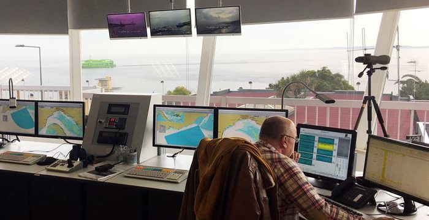
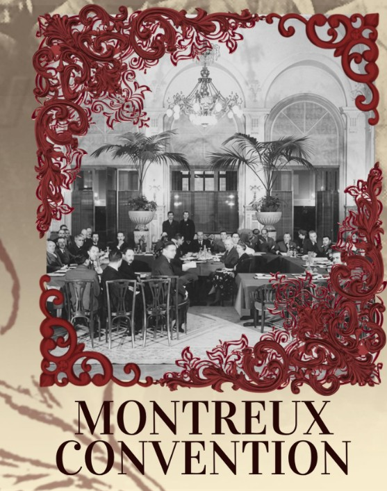

Tehran and Muscat are not openly proposing a toll. They are building the possible legal architecture for ships to pay without formally paying for the right of passage.
UNCLOS Articles 38 and 44 protect continuous transit through international straits and prohibit coastal states from obstructing or suspending it. The narrow opening is the logic of Article 26: vessels cannot be charged merely for passing, but non-discriminatory fees may be collected for specific services actually rendered.
A defensible Iran–Oman system could therefore combine paid pilotage, towing, emergency response and other vessel-specific services with a broader Article 43 cooperative mechanism funding navigation aids, traffic management, search and rescue, and pollution response. Tariffs would need to be transparent, proportionate to real costs and identical for comparable vessels, ideally with IMO involvement and independent auditing.

The strategy is to shift the argument from whether ships should pay to what service they are supposedly paying for.
There are precedents, but none gives Iran a blank cheque. Under the 1936 Montreux Convention, Turkey collects limited dues for sanitary, lighthouse and lifesaving services. The Malacca–Singapore mechanism funds navigation safety through cooperation with user states and industry. Meanwhile, the old Danish Sound Dues were abolished in 1857. Suez and Panama are poor comparisons because they are artificial canals governed by separate legal regimes.

If payment becomes compulsory simply to cross Hormuz, it becomes a de facto toll — and almost certainly an unlawful one.
The red line remains clear: if payment varies according to flag or political alignment, greatly exceeds the cost of the service, or is enforced through detention and coercion, it crosses into illegal territory under international law.
Oman can give the project diplomatic and institutional credibility. It also constrains Iran, because Muscat cannot legally turn an international strait into a joint toll booth.